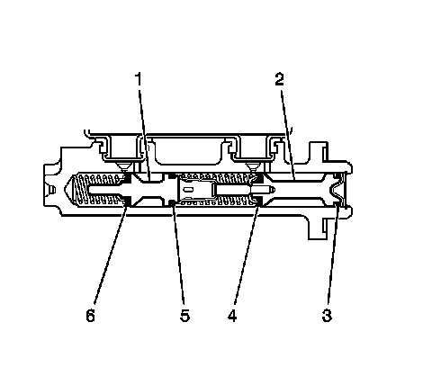

Overhaul
Master Cylinder Overhaul
Caution: Refer to Brake Fluid Irritant Caution (Brake Fluid Irritant Caution) .
Notice: Refer to Brake Fluid Effects on Paint and Electrical Components Notice (Vehicle Damage Warnings) .
Disassembly Procedure

1. Remove the brake master cylinder from the vehicle. Refer to Master Cylinder Replacement (Master Cylinder Replacement) .
2. Secure the mounting flange of the brake master cylinder in a bench vise so that the rear of the primary piston is accessible.
3. Clean the outside of the master cylinder reservoir on and around the reservoir cap prior to removing the cap and diaphragm.
4. Remove the reservoir cap and diaphragm from the reservoir.
5. Inspect the reservoir cap and diaphragm for the following conditions. If any of these conditions are present, replace the affected components.
* Cuts or cracks
* Nicks or deformation
6. Remove the master cylinder reservoir from the master cylinder. Refer to Master Cylinder Reservoir Replacement (Master Cylinder Reservoir Replacement) .
7. Using a smooth, round-ended tool, depress the primary piston (2) and remove the piston retainer.
8. Remove the primary piston assembly from the cylinder bore.
9. Plug the cylinder inlet ports and the rear outlet port. Apply low pressure, non-lubricated, filtered air into the front outlet port, in order the remove the secondary piston (1) with the primary (6) and secondary (5) seals, and the return spring.
10. Discard the primary piston assembly, the piston retainer, and the seals and seal retainer from the secondary piston.
Assembly Procedure
Important: Do not use abrasives to clean the brake master cylinder bore.
1. Clean the interior and exterior of the master cylinder, the secondary piston (1), and the return spring in denatured alcohol, or equivalent.
2. Inspect the master cylinder bore, inlet and outlet ports, the secondary piston (1), and the return spring for cracks, scoring, pitting, and/or corrosion. Replace the master cylinder if any of these conditions exist.
3. Dry the master cylinder and the individual components with non-lubricated, filtered air.
4. Lubricate the master cylinder bore, the secondary piston (1), the return spring, and all of the individual overhaul components with Delco Supreme 11(R), GM P/N 12377967 (Canadian P/N 992667), or equivalent DOT-3 brake fluid from a clean, sealed brake fluid container.
5. Assemble the lubricated, new primary seal (6) and retainer, and new secondary seal (5) onto the secondary piston.
6. Install the lubricated return spring and secondary piston assembly (1) into the cylinder bore.
7. Install the lubricated, new primary piston assembly (2) into the cylinder bore.
8. Using a smooth, round-ended tool, depress the primary piston (2) and install the new piston retainer.
9. Install the master cylinder reservoir to the master cylinder. Refer to Master Cylinder Reservoir Replacement (Master Cylinder Reservoir Replacement) .
10. Install the reservoir cap and diaphragm to the reservoir.
11. Install the master cylinder to the vehicle. Refer to Master Cylinder Replacement (Master Cylinder Replacement) .